量的推理实际上是天平平衡的问题，通过量的推理题目，孩子可以理解天平的基本原理，学会使用天平，建立等量代换的基本数学思想，增强逻辑推理能力。
有关天平平衡的量的推理题目大致分为两类：一类是通过天平判断轻重，从而对物体的轻重进行排序；另一类是通过天平的平衡，借助等量代换，建立没有直接联系的某两个物体之间的轻重换算关系。对于这类问题，建议家长让孩子实际使用天平，从而建立基本的天平平衡的概念，这样对于培养孩子的逻辑推理能力大有裨益。
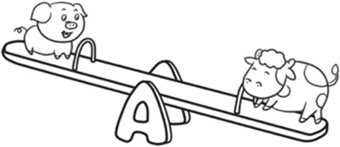
典型例题 1 小动物们玩跷跷板，看一看，3个小动物中谁最轻，谁最重？
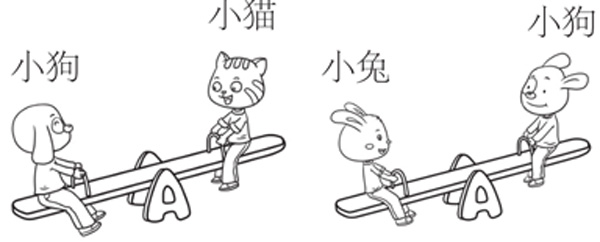
首先要理解跷跷板两端物体轻重的判断方法，跷跷板和天平一样，哪头低说明哪头重。在解这样的题时，孩子可以用排队和插队的方法来确定轻重顺序。
1个跷跷板可以确定2个动物的轻重，第1幅图中，小狗比小猫重，那么小狗排在小猫的前面。孩子在给动物排队时，动物之间的空隙要留大一些，因为可能有些动物要插队。
小狗 小猫
第2幅图中，小兔比小狗重，小兔排在小狗的前面。
小兔 小狗 小猫
很显然，3个动物中小兔最重，小猫最轻。
典型例题 2 狮子、老虎、狗熊和河马玩跷跷板，你能按照从重到轻的顺序给他们排序吗？
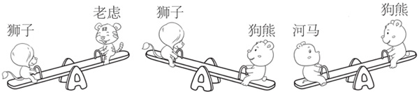
第1幅图中，狮子比老虎重，所以狮子排在老虎的前面。
狮子 老虎
第2幅图中，狗熊比狮子重，所以狗熊排在狮子的前面。
狗熊 狮子 老虎
第3幅图中，河马比狗熊重，所以河马排在狗熊的前面。
河马 狗熊 狮子 老虎
所以他们从重到轻的顺序是河马、狗熊、狮子、老虎。
典型例题 3 下图中的天平不平衡，请想办法使天平平衡。每只鸭子的重量相同。
（1）只能改变天平一端的数量，你能使天平平衡吗？
（2）不改变天平上鸭子的总量，你能使天平平衡吗？
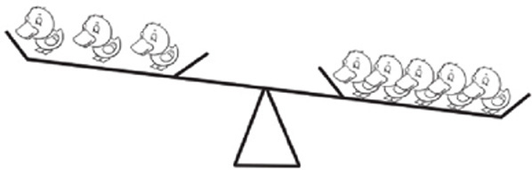
天平的左边有3只相同的鸭子，右边有5只相同的鸭子，所以要使天平平衡，左右两边的鸭子数量应该相等，因此如果只能改变天平一端的数量，则有以下2种方法。
（1）在天平的左边加上2只相同的鸭子，这样左边有3+2=5只鸭子，与右边相同。
（2）在天平的右边减去2只相同的鸭子，这样右边有5-2=3只鸭子，与左边相同。
如果不改变天平上鸭子的总量，现在知道天平上一共有3+5=8只鸭子，题目就变成了哪2个相同的数能组成8，涉及数的组成问题。我们知道4+4=8，所以只要从天平的右边拿走1只鸭子，放在天平的左边，这样天平的两边都是4只鸭子，天平就平衡了。
典型例题 4 在第2、3个天平的左侧填上所需鸡蛋的数量。
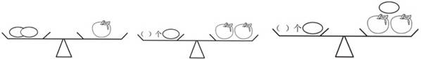
从第1个天平可以看出，2枚鸡蛋的重量等于1个苹果的重量。因此可以这样考虑第2个天平应如何放鸡蛋：在第1个天平的两边各加上1个苹果，这样天平两边的重量是不变的，天平还是平衡的，由于1个苹果的重量等于2枚鸡蛋的重量，把第1个天平左边加的1个苹果替换成2枚鸡蛋，这样可以得出第2个天平左边的鸡蛋是2+2=4枚。
第3个天平在第2个天平平衡的基础上，在右边又增加了1枚鸡蛋，为了天平的平衡，可以在天平的左边也加1枚鸡蛋，所以第3个天平的左边是4+1=5枚鸡蛋。
典型例题 5 在下面的图形中，需要在第3个天平的左侧空盘里放几个苹果才能保持天平平衡？
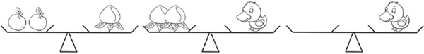
从第1个天平可以看出，1个桃子的重量等于2个苹果的重量；从第2个天平可以看出，1只鸭子的重量等于2个桃子的重量，第1个和第2个天平都出现了桃子，使用等量代换的方法，我们知道，2个桃子的重量等于4个苹果的重量，2个桃子是相等的量，所以1只鸭子的重量等于4个苹果的重量，所以要在第3个天平的左侧空盘里放4个苹果，天平才能平衡。
1.小猪、小牛、小猫和小狗在玩跷跷板，你能按照从重到轻的顺序给他们排序吗？
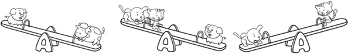
2.在第3个天平的左侧填上所需草莓的数量。
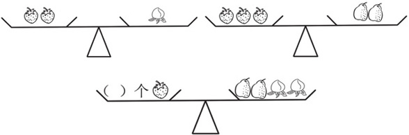
3.下面的3个天平都不平衡。如果不改变每个天平上的总量，如何使3个天平都平衡？
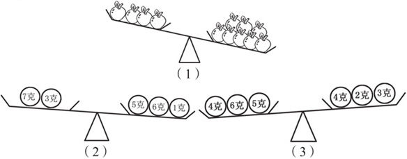
4.在第3个天平的左侧填上所需梨的数量。
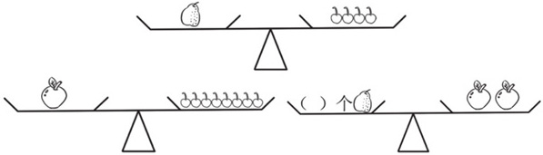
5.在第3个天平的右侧填上所需小狗的数量。
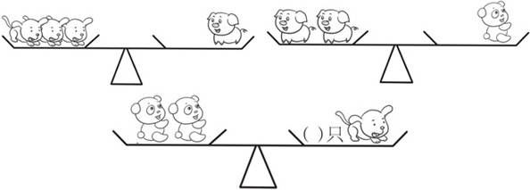
6.下图中，应该在第3个天平的右侧空盘里放几枚蛋？
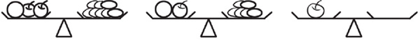
7.下图中，应该在第3个天平的右侧空盘里放几个方块？
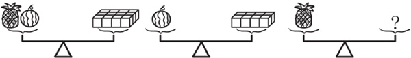